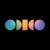

Principal Software Engineer
First engineering hire in Odido's new React-driven Digital Engineering department. Partnered with the head of department to design and implement hiring processes, conducting the majority of interviews in the first year and scaling the team from one engineer to nearly 50 in two years.
Leading the development of all new user-facing portals across B2C, B2B and COPS. Responsible for the technical architecture and strategy of the portals, as well as setting standards for coding, testing and quality. Notable launches include Klik&Klaar and SimWallet, both commercially successful B2C products that became significant revenue drivers for Odido.
TypeScript, React, Next.js, NestJS.